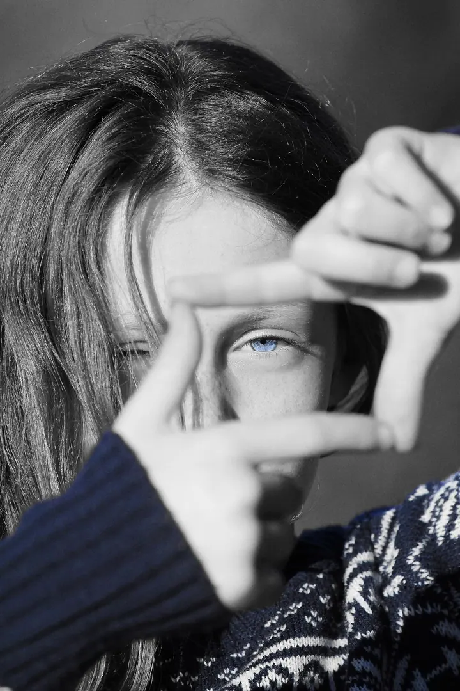

Portréty a focení lidí
Přirozené portréty v prostředí, kde se cítíte dobře. Bez ateliéru a bez strojených póz, pro podnikatele, řemeslníky, umělce i každého, kdo chce prostě dobrou fotografii.

Fotograf lidí, firem a míst
Jmenuji se Michal Martinek a fotím lidi, svatby, firmy, řemeslo i místa. Nejradši tam, kde žijete a pracujete, bez ateliéru a strojených kulis. Hledám světlo, prostředí a okamžik, který vystihne právě vás.
Zeptat se na termín
Přirozené portréty v prostředí, kde se cítíte dobře. Bez ateliéru a bez strojených póz, pro podnikatele, řemeslníky, umělce i každého, kdo chce prostě dobrou fotografii.
Jsem s vámi od začátku až do večera, nenápadně a přímo v dění. Výsledkem je ucelený fotografický příběh celého dne.
Fotím lidi, práci i výsledek: ruce, nástroje, materiál, dílnu i hotový výrobek. Aby z fotografií bylo poznat, kdo jste a co děláte.
Žiju v Osečnici a fotím lidi, firmy a místa. Nejsem příznivcem strojených fotografií a univerzálních šablon. Lidé jsou pro mě nejzajímavější ve chvíli, kdy přestanou pózovat: když se soustředí, smějí, pracují nebo jsou prostě sami sebou.
Fotoaparát mě provází i na cestách. Byl jsem v Bolívii, v Uzbekistánu a Tádžikistánu, v podzimním Laponsku i v mrazivé Femundsmarce, na Lofoty jsme vyrazili na starých kolech. Z cest pořádám cestovatelské besedy a výstavy v knihovnách v Novém Městě nad Metují a v Týništi nad Orlicí.
Rád fotím krajinu a živou přírodu, kde se nedá nic režírovat a čeká se na správné světlo. Fotím a natáčím s kapelami, třeba s Alkeholem, Alžbětou nebo Vanaheimem v Norsku. A když už nejde víc poodstoupit, vzlétnu s dronem.

Stačí pár řádků: co potřebujete nafotit, kde se focení bude konat a přibližně v jakém rozsahu.
Ozvu se vám a společně domluvíme, jestli a jak můžu pomoct. U větších zakázek připravím individuální nabídku.
Přijedu tam, kde žijete nebo pracujete, a hledám světlo, prostředí a okamžik. Někdy stačí hodina, jindy má smysl vrátit se podruhé.
Výsledkem není pár náhodných snímků, ale promyšlený soubor fotografií, který můžete skutečně používat.
Záleží na rozsahu, místě a počtu fotografií. Orientačně: portrét od 4 000 Kč, akce a reportáže od 5 000 Kč, firmy a řemeslo od 6 000 Kč, celodenní reportáž nebo svatba od 12 000 Kč.
Ne. Fotím venku nebo v prostředí, kde se cítíte dobře, třeba doma, v dílně nebo v provozovně. Bez ateliéru a bez strojených póz.
Ano, domy, chalupy, apartmány, interiéry i provozovny, od 5 000 Kč. U náročnějších prostor přijedu i víckrát, abych zachytil světlo v různou denní dobu.
Ano. Letecké fotografie a video z dronu nabízím samostatně od 3 000 Kč, jako součást většího focení od 1 500 Kč.